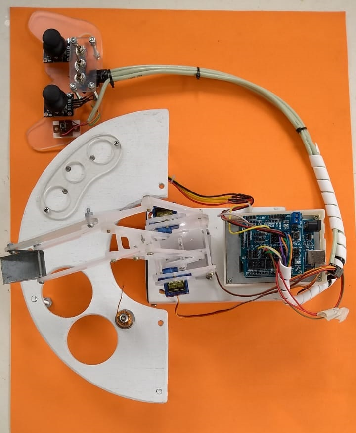
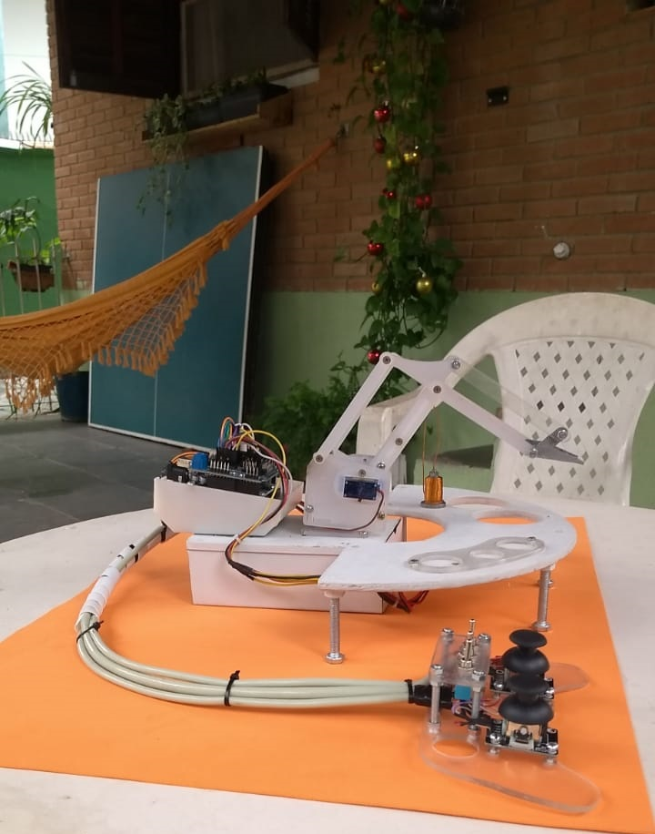
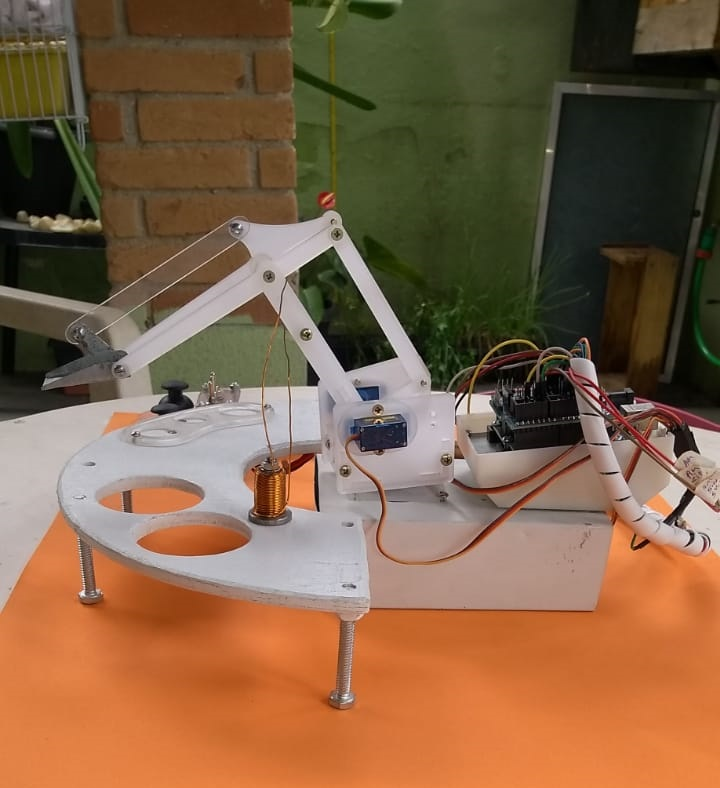

|  |  |  |
Dados os estudos realizados, fez-se a compra dos materiais que seriam necessários para a montagem do protótipo. O braço se constitui a partir de uma adaptação de um modelo já pronto, normalmente empregado em escolas técnicas para didática de alunos. Dito isso, foi-se adquirido um braço seguindo esse raciocínio, porem ao chegar, o mesmo não se encontrava em um bom estado de uso.
Realizou-se algumas melhorias nos sistemas de movimentação e fixação, para que assim o braço tomasse formato pronto para sua utilização. Suas principais mudanças seriam a ausência da garra, na qual fez-se uso de uma chapa suporte no lugar, onde o eletroímã se encontraria, além disto, sua fixação em um base de calha galvanizada, utilizado apenas pela praticidade com a qual conseguíamos trabalhar em cima, além de fornecer a altura e sustentação necessária economizando na construção de uma base para o projeto.
Após fixada o braço em sua base, houve a necessidade de refazer algumas estruturas de movimentação do protótipo devido a angulação máxima do braço em relação a mesa de peças. Realizou-se a construção de uma das vigas de movimentação por meio do uso de um palito plástico na região de suporte a chapa de metal e o eixo de alongamento do braço para reposição das peças que faltavam no objeto comprado.
A mesa de detecção de peças, feita a partir de um carretel de fiação, de madeira, foi-se adquirida através de uma doação, cortou-se no formato desejado, e, com parafusos fez-se, seu suporte. Além disso, foram-se realizados furos para os quais os Ldr’s tomariam local para realizar a sensibilidade de luz no ambiente de deposito dos materiais, para serem sensoriais para o modelo de movimentação.
Utilizou-se um sistema de divisor de tensão com resistores de 10KΩ para ligação do componente citado, onde obteve-se um sinal analógico funcionando como digital. Quando a peça cobre o sensor ldr a resistência sobe, fazendo com que atinja um valor de tensão de sinal, que é lido pelo Arduíno, e convertido através de programação para ser utilizado como um dos starts do modo automático.
A programação, fez-se em linguagem C++, e tendo como componente de processamento o Arduíno UNO, que por sua vez realiza a leitura de nossas entradas e transmite os sinais desejados na saída de acordo com as lógicas realizadas na programação.
Tendo em mãos todos os estudos e componentes necessários já testados, deu-se início a parte fundamental, que seria a programação. A princípio realizou-se o teste da programação do modo manual, com potenciômetros nas entradas, servindo de controle de posição.
Continua[...] - Está página será dedicada a contrução do site referente as atividades requisitadas, sendo atualizado com as informações para tal.